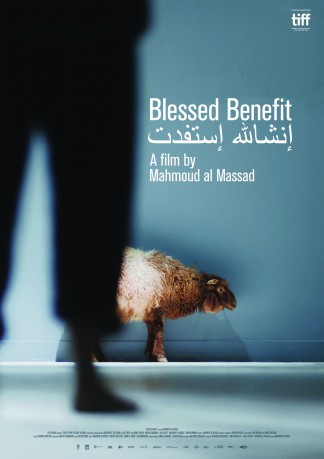

#9804 Gelobt sei der kleine Betrüger
 
 IMDB-Wertung: 6.7 / 10
IMDB-Wertung: 6.7 / 10  Metascore: 0
Metascore: 0 
Ahmad a construction worker gets tangled up in an unfortunate business deal leading him to prison. He meets fraudster Ibrahim who ruins his last hope to prove his innocence. Ahmad is awakened by the realisation that life in prison might be better than the one he has on the outside.
Jahr: 2016
Dauer: 82 Minuten
FSK: 6
Land: Deutschland Studio: Neue Visionen FilmverleihTonspuren:
Untertitel:
Auflösung: 720p (1280x720) Größe: 1761 MB
Genre: Drama, Komödie
Regisseur: Mahmoud al Massad
Drehbuch: Mahmoud al Massad
Soundtrack: Andre Matthias
Darsteller:
- Mahmoud al Massad als Ibrahim
- Ahmad Thaher als Ahmad
- Maher Khammash als El Mor
- Odai Hijazi als Abu Wafa / Ahmad's Cousin
- Nadim Remawi als Deadman
- Yasmine Mustafa als Sister
Datei: X:\2016(G-M)\Gelobt sei der kleine Betrüger (2016, FSK6, 1280x720).mkv seit 28.10.2018
Festplatte: HD 2016(A-Z)
 Es gibt insgesamt 164 Filme in der Gruppe '2016(G-M)'
Es gibt insgesamt 164 Filme in der Gruppe '2016(G-M)'